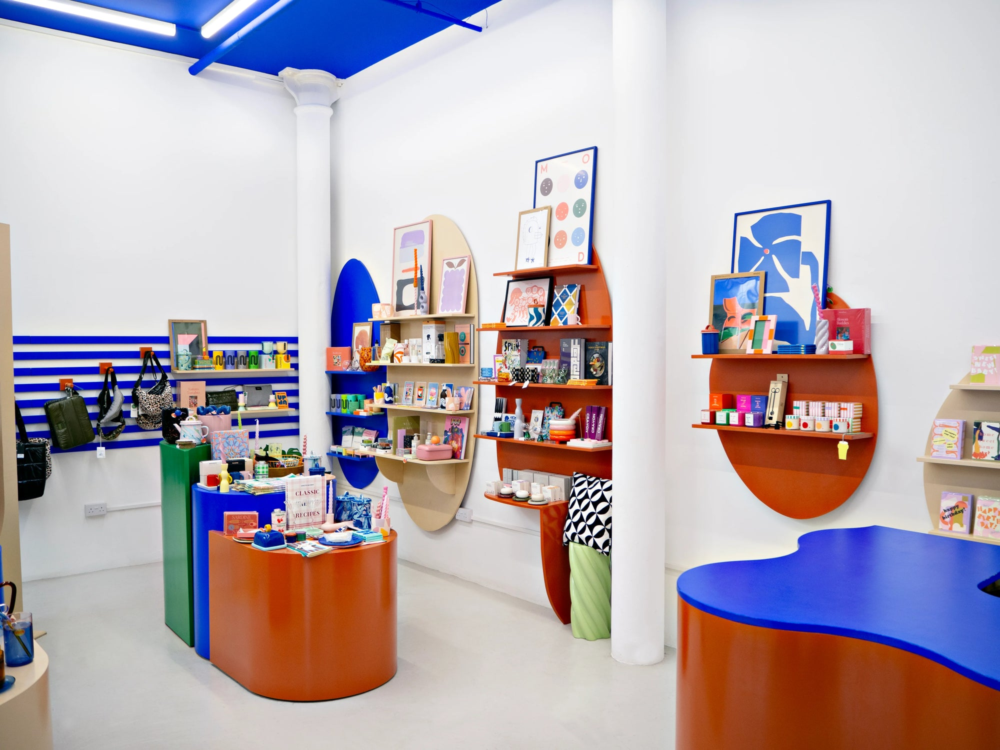
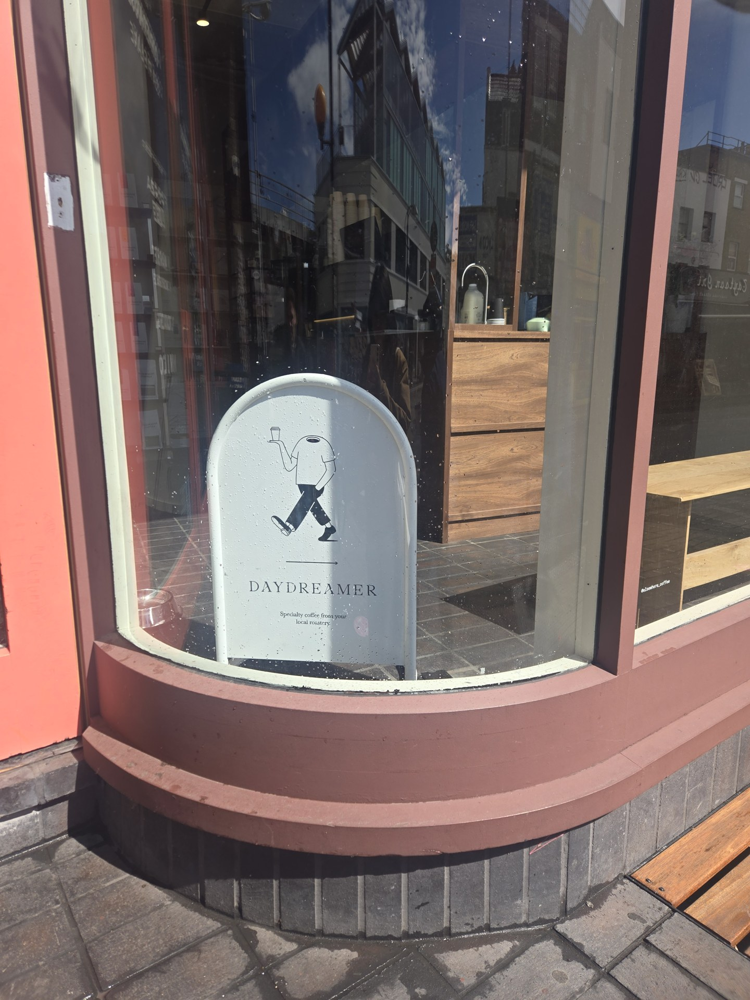
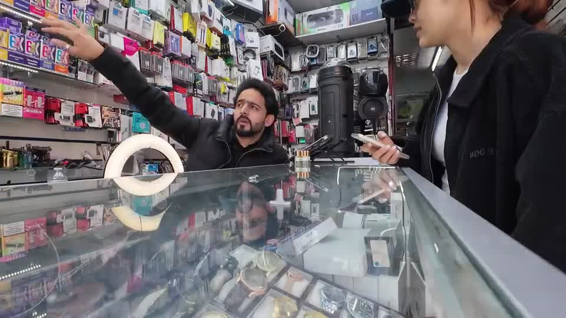
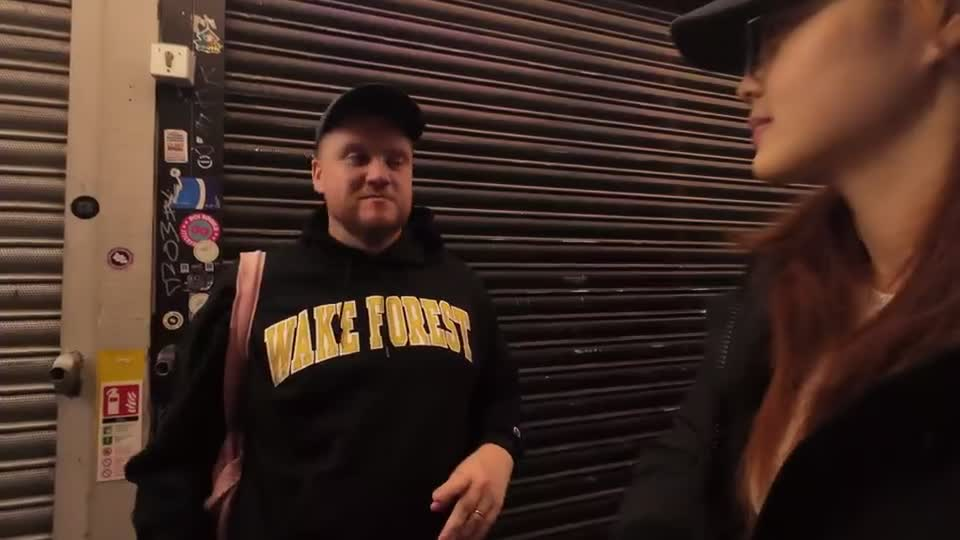

RECORD STORE / HOLDRONS ARCADE
Inverted Audio Record Store
Meet Tom Durston and discover the records, knowledge and listening events behind this independent electronic music shop.
Meet the shop & watch the interview01 / FIND YOUR WAY IN
Drawings and photographs by Caiyi Jiang. Select any scene to explore its details.
SHOPS & NEIGHBOURS / A PHOTO NOTEBOOK
Meet the people behind local businesses. Watch conversations about their work, everyday encounters and connections along Rye Lane.
RECORD STORE / HOLDRONS ARCADE
Meet Tom Durston and discover the records, knowledge and listening events behind this independent electronic music shop.
Meet the shop & watch the interview
HOMEWARES / COPELAND PARK
Step inside a colourful homewares shop in Bussey Alley, then hear a member of staff share a story about shopping locally.
Meet the shop & watch the interview
CAFÉ INTERVIEW
Look beyond the window and hear a conversation recorded at the café.
Meet the shop & watch the interview
PHONE SHOP / RYE LANE
A conversation at the phone shop beside K&K Butchers & Grocers on Rye Lane, about customer access, larger stores and free parking. Hear one shopkeeper’s perspective on what could bring more people to this part of the street.

MERCHANT VOICES / HOLDRONS ARCADE
A business owner beside the record store in Holdrons Arcade asks us to look beyond the busy street scene and notice the independent businesses behind it.
These introductions bring photographs together with recorded conversations. Business owners and staff can suggest corrections and tell us what else they would like visitors to know.
Prepare an introduction or correction